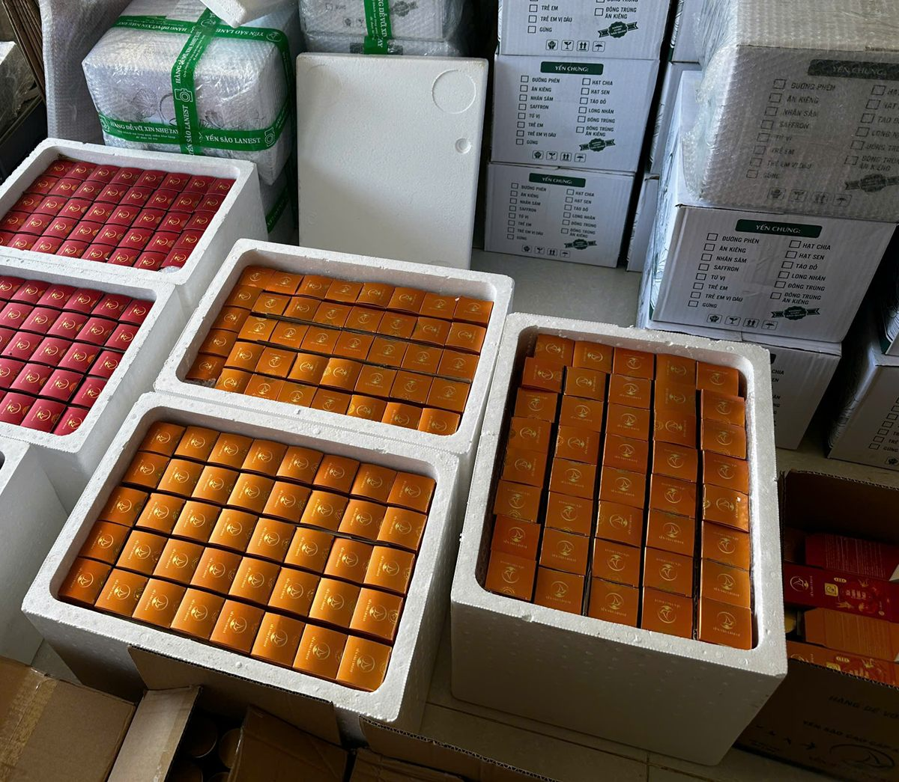
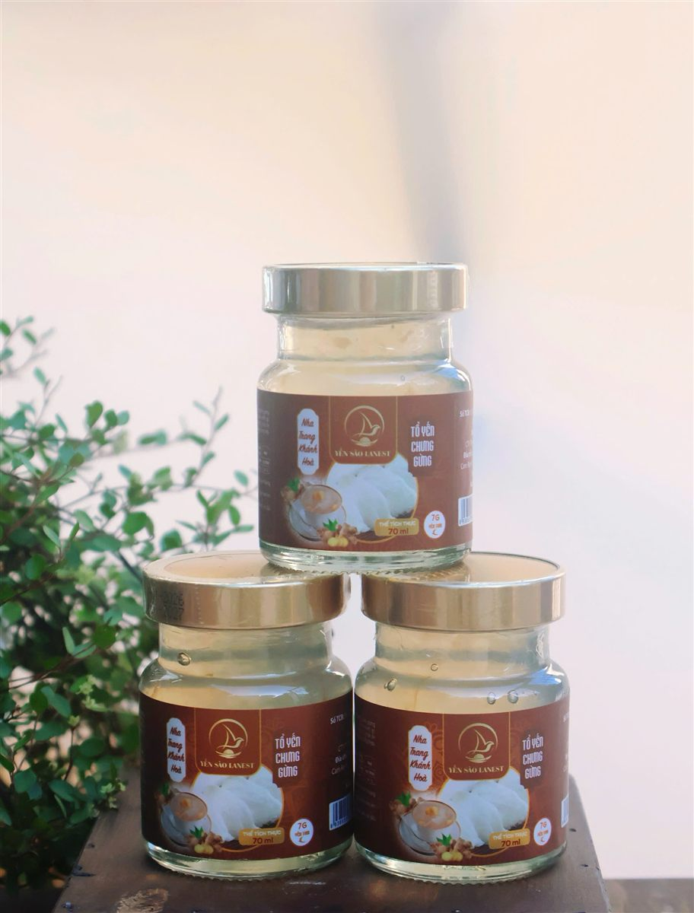

Bảo Quản Yến Hũ Chưng Sẵn: Hạn Dùng, Cách Cất Và Khi Nào Không Nên Dùng
Yến Sào Lanest · Đăng ngày 31/10/2026

Yến hũ tiện ở chỗ mở nắp là uống được, nhưng cũng vì tiện mà nhiều người cất đại một góc, quên luôn hạn dùng. Bài này gom lại những gì Lanest ghi trên nhãn và trong chính sách bán hàng về bảo quản yến hũ chưng sẵn: hạn dùng xem ở đâu, hũ chưa mở và đã mở cất thế nào, lúc nhận hàng cần kiểm tra gì, và khi nào thì nên bỏ hũ yến đi chứ đừng tiếc.
Yến hũ đóng hộp lẻ, xếp trong thùng xốp và thùng carton trước khi giao cho khách, đại lý
1. Hạn sử dụng yến hũ: đọc ở đâu?
Trên hồ sơ công bố của các hũ yến Lanest, mục ngày sản xuất và hạn dùng ghi đúng một câu: "NSX/HSD: Xem trên bao bì". Nghĩa là mỗi lô hàng có ngày sản xuất riêng, hạn dùng in trực tiếp lên từng hũ. Ví dụ ở hũ Tổ Yến Chưng Gừng 7g, hạn dùng được in trên nắp hũ.
Vì vậy Lanest không đưa ra một con số chung cho mọi hũ. Cách chắc nhất là nhìn hạn in trên chính hũ anh chị đang cầm, và dùng trong hạn đó. Mua nhiều hũ cùng lúc thì nên xếp hũ có hạn gần hơn ra phía trước để uống trước.
Khi đọc nhãn, anh chị cũng sẽ thấy hai dòng hũ khác nhau: dòng nguyên chất 100% (1,5g tổ yến, tương đương 15g yến tươi) và dòng 7g yến tươi. Cách bảo quản của hai dòng giống nhau, chỉ khác chút ở cách dùng (mục 3). Muốn hiểu kỹ hai dòng, xem bài yến hũ nguyên chất và yến hũ 7g.
2. Hũ chưa mở nắp: cất ở nhiệt độ thường, nơi khô ráo
Yến hũ Lanest đóng hũ thủy tinh 70ml và được chưng tiệt trùng. Nhãn công bố ghi cách bảo quản: nhiệt độ thường, nơi khô ráo, thoáng mát. Nói cách khác, hũ chưa mở không bắt buộc phải để tủ lạnh.
Điều cần tránh là ba thứ mà chính sách bảo hành của Lanest gọi tên là "bảo quản sai cách": nơi ẩm ướt, nhiệt độ cao, ánh sáng trực tiếp. Sản phẩm hư vì ba lý do này thì không thuộc diện đổi trả. Trong nhà, những chỗ hay phạm phải là:
- Gần bếp, nồi cơm điện, ấm siêu tốc.
- Bậu cửa sổ, kệ có nắng chiều chiếu vào.
- Cốp xe, xe hơi đỗ ngoài nắng cả ngày.
- Góc nhà tắm, gầm tủ, nơi tường hay bị ẩm.
3. Trước khi uống: lắc nhẹ, thích lạnh thì cho vào ngăn mát
Nhãn hũ ghi cách dùng: lắc nhẹ trước khi uống, ngon hơn khi uống lạnh. Nhiều nhà cất phần lớn yến hũ ở nhiệt độ thường, chỉ để sẵn vài hũ trong ngăn mát tủ lạnh cho mấy ngày tới. Như vậy vừa có hũ mát để uống, vừa không chiếm chỗ tủ lạnh.
- Dòng nguyên chất 100%: dùng ngay, ngon hơn khi uống lạnh; riêng vị gừng nhớ lắc nhẹ trước khi uống.
- Dòng 7g yến tươi: dùng ngay, hoặc ai thích ăn ấm có thể chưng cách thủy cả hũ.

Hũ thủy tinh 70ml nắp vặn kín: chưa mở thì cất nhiệt độ thường, mở rồi thì để lạnh
4. Hũ đã mở nắp: bảo quản lạnh, dùng sớm
Một khi nắp đã mở, hũ yến không còn kín như lúc xuất xưởng nữa. Cẩm nang của Lanest ghi rõ: yến chưng sẵn bảo quản lạnh sau khi mở nắp. Đừng để hũ đã mở ở nhiệt độ phòng.
Lanest hiện chưa công bố số ngày cụ thể cho hũ đã mở, nên lời khuyên của Lanest là đi theo hướng an toàn:
- Một hũ 70ml vừa một lần dùng của người lớn, nên mở hũ nào uống hết hũ đó.
- Chưa uống hết thì vặn chặt nắp, cho ngay vào ngăn mát và dùng nốt càng sớm càng tốt.
- Cho trẻ nhỏ dùng thì nên rót ra chén phần vừa đủ, để phần còn lại trong hũ không bị muỗng chạm vào nhiều lần.
Khác với yến khô, yến hũ đã mở không có "hộp hút ẩm" nào giữ hộ. Chi tiết cách cất tổ yến khô, yến đã ngâm và yến tự chưng có trong bài cách bảo quản tổ yến khô và yến đã chưng.
5. Nhận hàng: kiểm tra gì trước khi cất?
Bảo quản đúng bắt đầu từ lúc nhận thùng hàng. Với đơn giao thu tiền khi nhận (COD), anh chị được kiểm tra sản phẩm trước khi thanh toán:
| Kiểm tra | Cần thấy |
| Hộp, hũ | Không móp, không nứt vỡ; nắp kín, hũ không rò rỉ |
| Tem niêm phong | Còn nguyên |
| Số lượng, chủng loại | Đúng số hũ, đúng vị, đúng dòng đã đặt |
| Hạn sử dụng | In rõ, còn hạn; bao bì nguyên vẹn |
Nếu hàng móp, vỡ, hư hỏng, thiếu số lượng hoặc sai loại, anh chị có quyền từ chối nhận hàng và báo ngay hotline 0258 6278 627.
Thêm hai thói quen nhỏ nhưng rất có ích: quay video lúc mở hộp và giữ hóa đơn. Chính sách của Lanest cho đổi trả trong 15 ngày kể từ ngày nhận hàng (và không quá hạn sử dụng), với trường hợp hũ vỡ, rò rỉ, không kín, giao sai, hoặc hư hỏng do vận chuyển, do nhà sản xuất. Cần có hóa đơn và hình ảnh, video lúc mở hàng làm bằng chứng. Lanest phản hồi trong 1–2 ngày làm việc. Toàn bộ quy trình đặt hàng, giao hàng, đổi trả có trong bài mua yến tại Lanest.
6. Khi nào không nên dùng hũ yến?
Nhãn hũ Lanest in một dòng cảnh báo ngắn: "Không sử dụng sản phẩm khi thấy có dấu hiệu lạ." Cụ thể, anh chị nên bỏ hũ yến khi:
- Đã quá hạn sử dụng in trên hũ.
- Hũ nứt, vỡ, rò rỉ, nắp lỏng hoặc hở trước khi mở.
- Tem niêm phong rách, có dấu hiệu đã bị mở.
- Khi mở ra thấy mùi, vị hoặc màu khác hẳn những lần uống trước.
- Hũ đã mở mà bị bỏ quên ở nhiệt độ phòng.
Nếu hũ có dấu hiệu lạ ngay lúc nhận hàng hoặc lúc mở lần đầu, đừng vứt đi vội: chụp ảnh, quay video, giữ lại hũ và hóa đơn rồi liên hệ Lanest để được xem xét đổi trả. Còn hũ hỏng vì cất sai chỗ, làm rơi, để hở nắp thì nằm ngoài diện bảo hành, nên phần cất giữ trong nhà là phần anh chị tự giữ được.
Uống đều mỗi ngày thì xem thêm bài uống yến hũ mỗi ngày để biết nên uống lúc nào.
Câu hỏi thường gặp
Yến hũ chưa mở có cần để tủ lạnh không?
Không bắt buộc. Nhãn ghi bảo quản ở nhiệt độ thường, nơi khô ráo, thoáng mát. Anh chị chỉ cần cho vào ngăn mát trước khi uống nếu thích uống lạnh.
Yến hũ mở nắp rồi để được bao lâu?
Lanest chưa công bố số ngày cụ thể. Hũ đã mở phải bảo quản lạnh; tốt nhất mở hũ nào uống hết hũ đó, chưa hết thì đậy kín, để ngăn mát và dùng nốt sớm.
Hạn sử dụng yến hũ là bao lâu?
Mỗi lô có ngày sản xuất riêng nên hạn dùng in trực tiếp trên bao bì từng hũ. Anh chị luôn xem hạn in trên hũ, không dựa vào một con số chung.